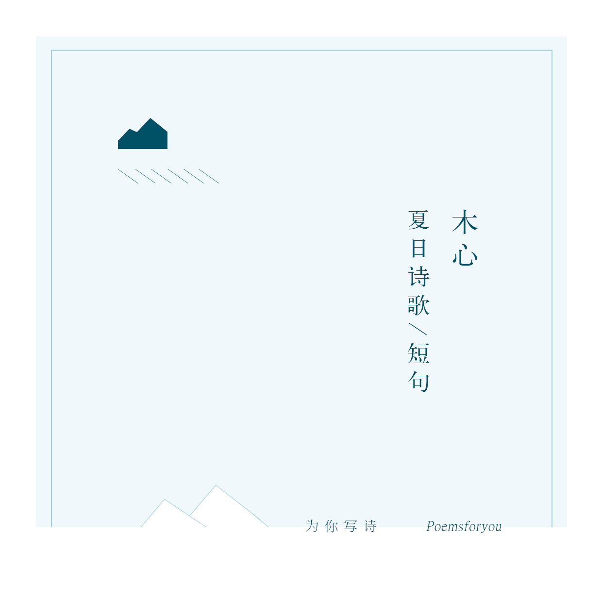
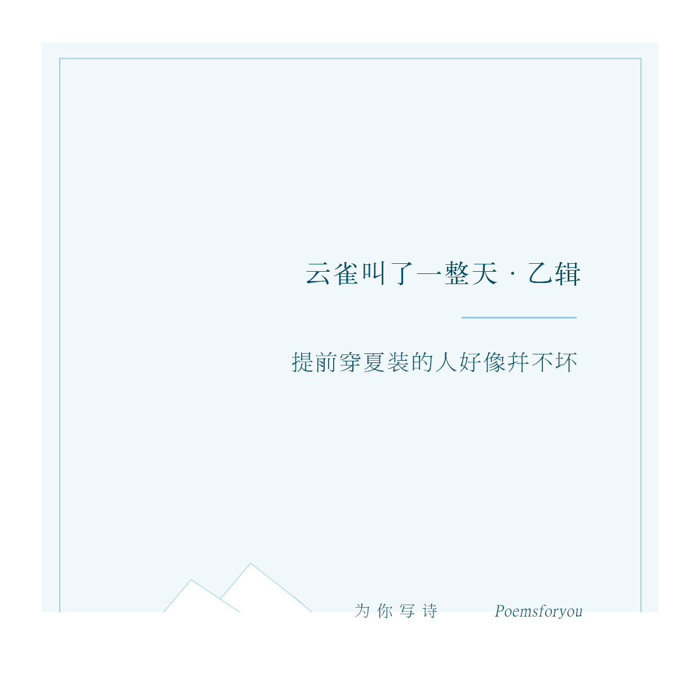
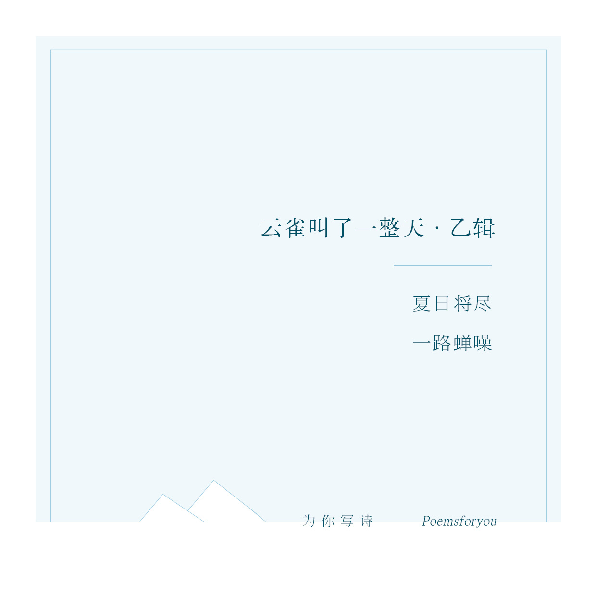
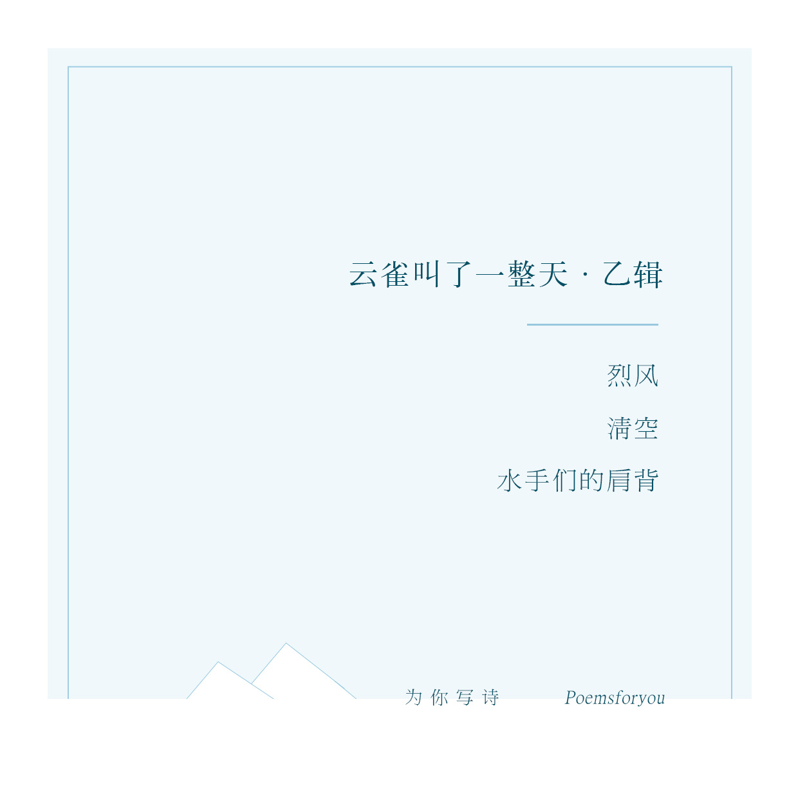
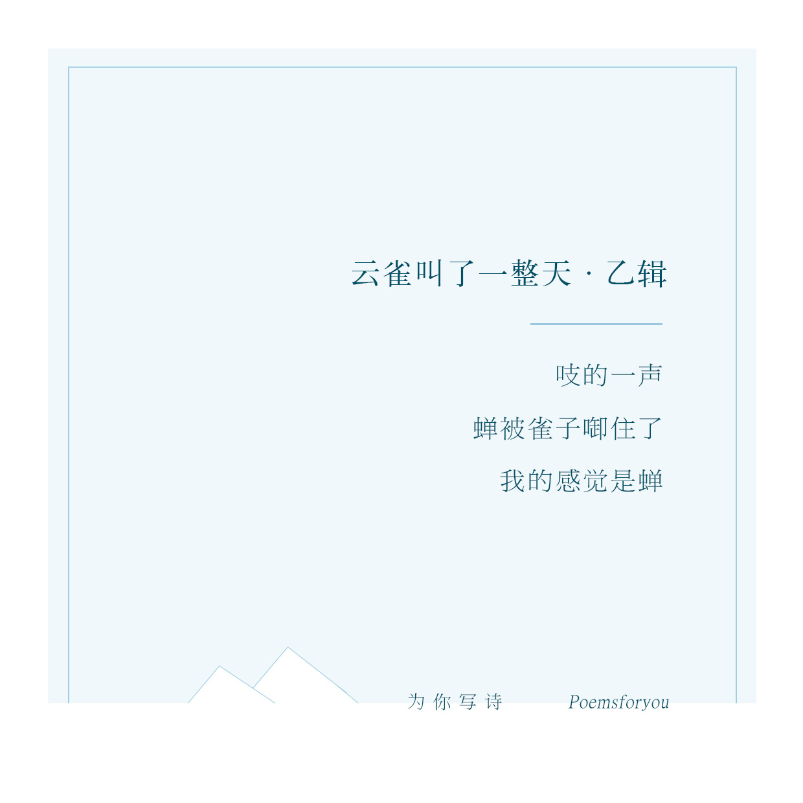
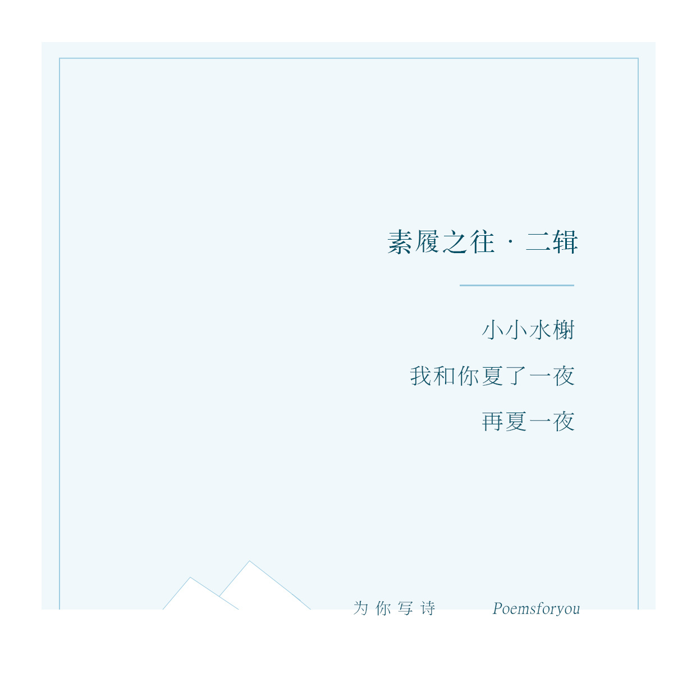
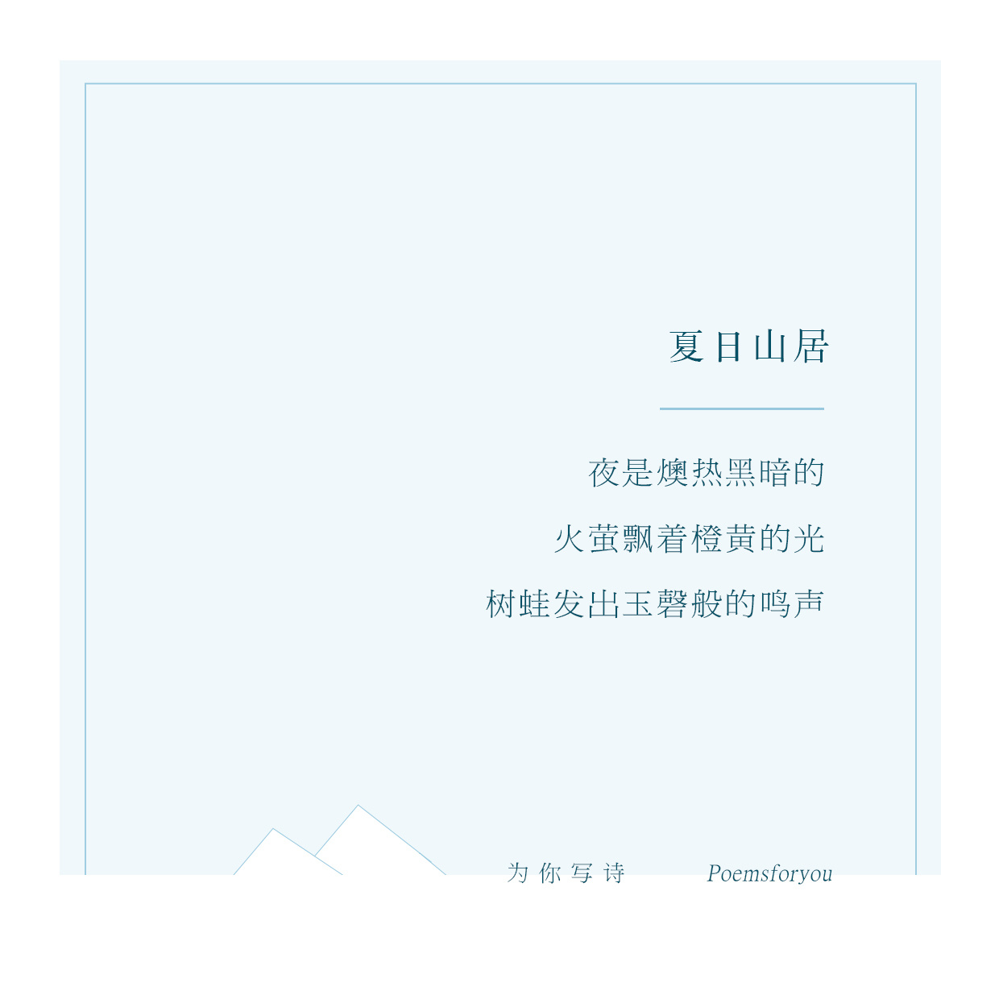
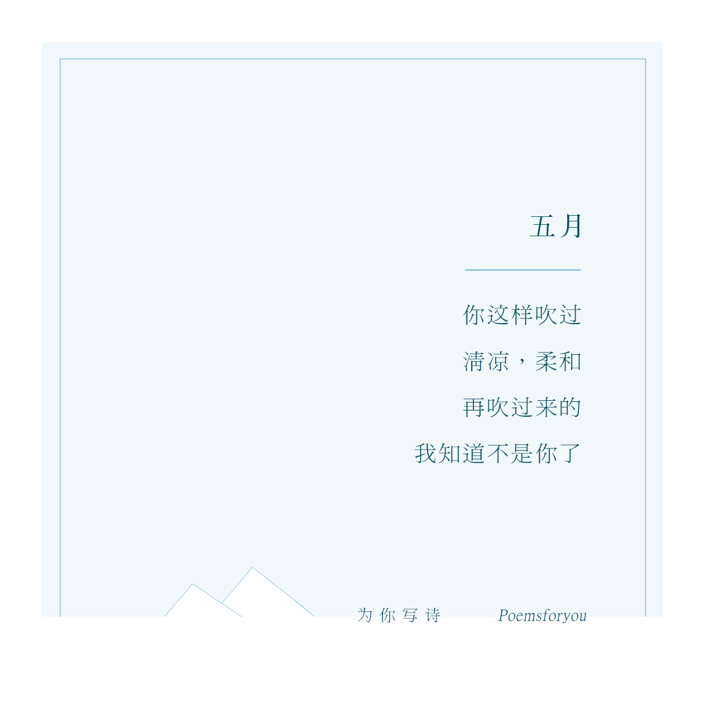
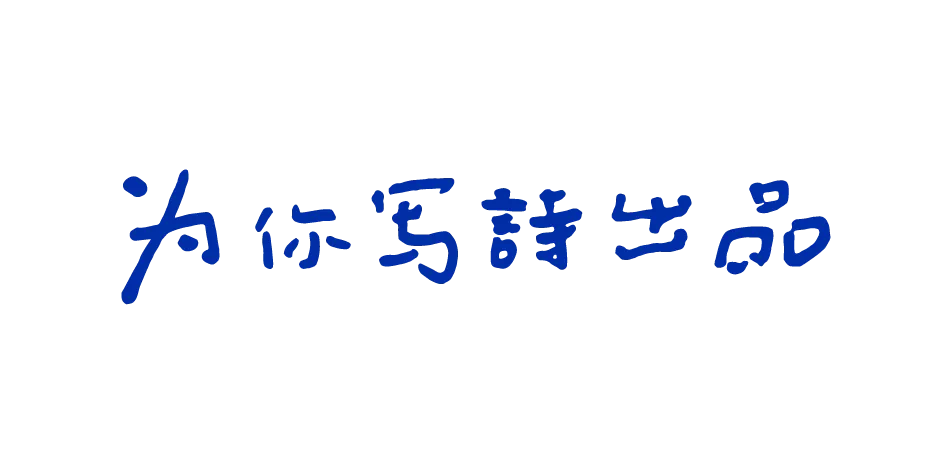

我们还有诗歌
poemsforyou
木心

木心诗歌

木心诗歌1

木心诗歌2

木心诗歌3

木心诗歌4

木心诗歌6

木心诗歌7

木心诗歌8
木心（1927年2月14日—2011年12月21日），本名孙璞，字仰中，号牧心，笔名木心。中国当代作家、画家。1927年出生于浙江省嘉兴市桐乡乌镇东栅。毕业于上海美术专科学校。2011年12月21日3时逝世于故乡乌镇，享年84岁。
著有散文集《琼美卡随想录》《散文一集》等；诗集《西班牙三棵树》《巴珑》等；小说集《温莎墓园日记》等；画集《木心画集》等；口述作品《文学回忆录》等。
“木心一生作画，写文，写诗，但我仍愿意以诗人称呼木心，因为在我看来，“诗人”的名号是一个浪漫文学作家最佳的代名词。”
在《文学回忆录》中，木心曾经说过，“文学是可爱的。生活是好玩的。艺术是要有所牺牲的。”
因着文学可爱，所以他一生都在写作，即使过往种种都付之一炬，仍笔耕不辍。因着生活好玩，所以他总戴一顶呢帽，穿着呢大衣，拄着木质拐杖，保持体面和尊严。因为艺术要牺牲，所以他一生颠沛流离，坦然接受生活抛来的苦难，和文学艺术相伴终老。

